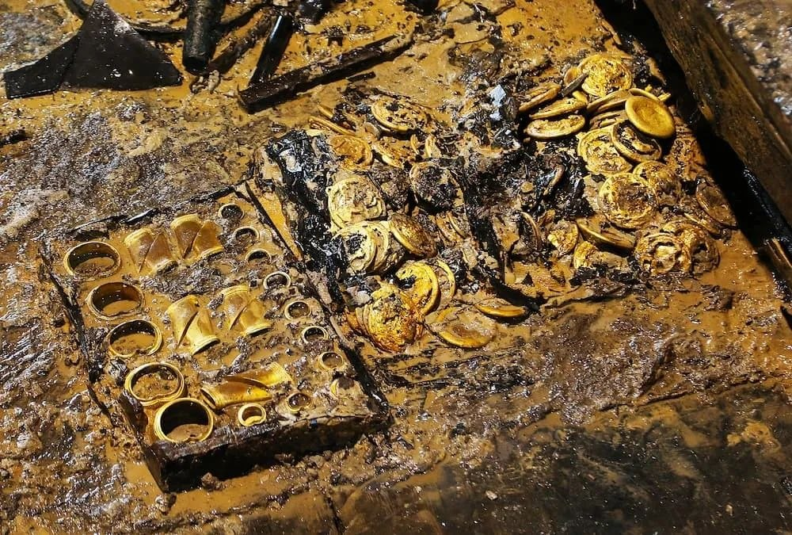
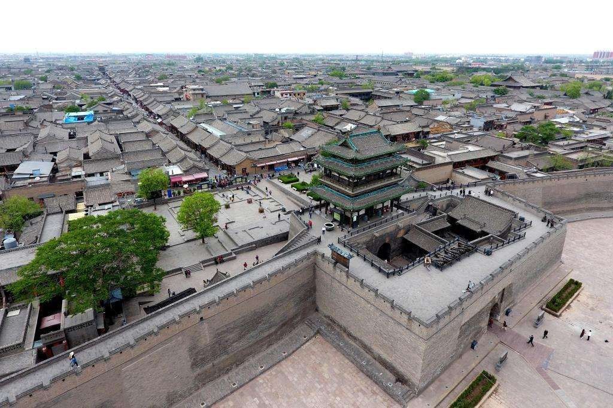
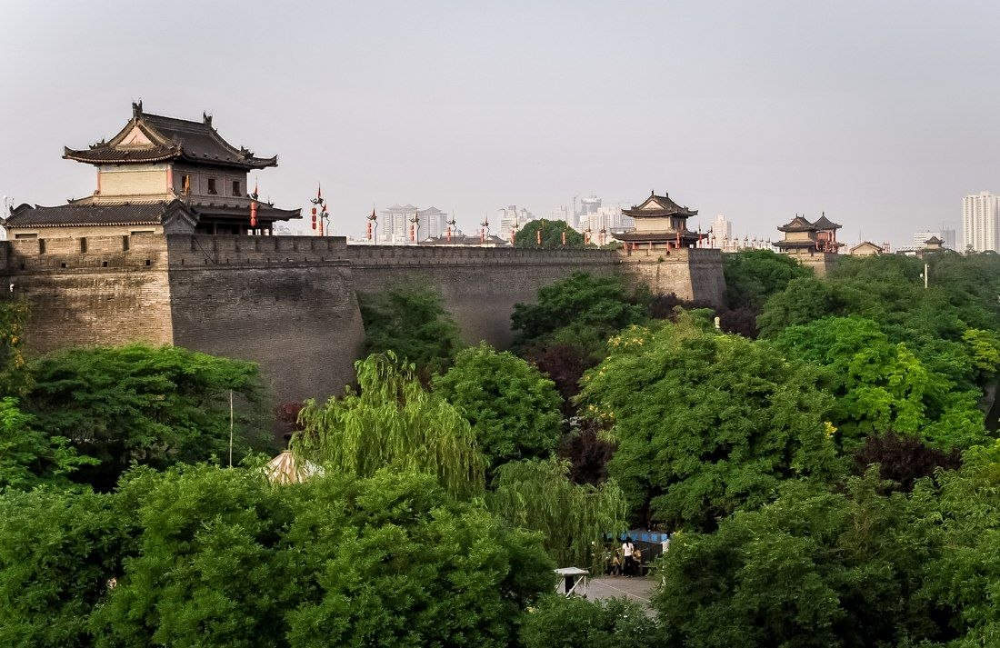

Общая информация
История Китая — это тысячелетняя череда сменявших друг друга династий, развивавшаяся по циклическому принципу. Согласно древнекитайской философии, легитимность правителя определялась «Мандатом Неба» (Тянь-мин). Если император был справедлив, страна процветала, но если он погружался в пороки, Небо посылало стихийные бедствия и бунты, передавая право на власть новому достойному роду.
Среди десятков династий три эпохи — Хань, Тан и Мин — стали главными опорами государственности. Они заложили основу бюрократической системы, проложили глобальные торговые артерии и создали технологии, изменившие ход мировой истории.
Династия Хань (206 год до н.э. — 220 год н.э.)
Эпоха Хань пришла на смену жестокой и кратковременной империи Цинь. Избежав крайностей тирании, ханьские правители объединили страны под мудрым и прагматичным началом. Именно в этот период сформировалась основа китайской нации, из-за чего титульное население Китая до сих пор гордо именует себя «ханьцами».

Наследие эпохи ХаньФормирование идентичности и хроник
Ханьская эпоха подарила миру Сыма Цяня — «отца китайской историографии», создавшего труд «Ши цзи» (Исторические записки). Государство соединило жесткую централизацию с мудростью конфуцианства, сохранив структуру общества на два тысячелетия вперед.
Институты и монополии
При императоре У-ди конфуцианство стало официальной идеологией. Появились первые экзамены для чиновников (кэцюй). Для финансирования войн с кочевниками сюнну (хунну) государство ввело государственные монополии на соль, железо и вино, что укрепило казну.
Открытие Шелкового пути
Дипломат Чжан Цянь совершил опасное путешествие в Центральную Азию. Это положило начало Великому шелковому пути, связавшему Чанъань с Римской империей. Поднебесная экпортировала шелк и железо, импортируя ферганских «небесных коней», виноград и люцерну.
Инженерный гений
В эту эпоху Цай Лунь усовершенствовал технологию производства бумаги, а ученый Чжан Хэн создал первый в мире сейсмоскоп и армиллярную сферу. Сельское хозяйство совершило рывок благодаря чугунному плугу и плугу с регулируемым отвалом.
Закат и Троецарствие
Захват земель влиятельными кланами и коррупция евнухов вызвали массовое Восстание «Желтых повязок» в 184 году. Империя распалась на три враждующих государства — Вэй, Шу и У, начав многовековой период раздробленности.
Династия Тан (618–907 годы н.э.)
Пройдя через испытания раздробленности и краткое объединение династией Суй, Китай вступил в эпоху Тан. Этот период стал сияющим зенитом средневековой Азии, а столица Чанъань превратилась в крупнейший мегаполис мира с населением более миллиона человек.

Столица ЧанъаньЦентр мировой торговли и культур
Чанъань строилась по строгой сетчатой системе. В городе открыто действовали христианские несторианские храмы, зороастрийские святилища и буддийские пагоды, принимая купцов из Согдианы, Персии и Индии.
Реформы и Великий канал
Система «равных полей» обеспечила крестьян землей в обмен на налоги и службу. Активно использовался Великий китайский канал, соединивший север страны с плодородным югом. Границы империи расширились до Памира и бассейна Тарима.
Золотой век поэзии и ремесел
Это эпоха гениальных поэтов Ли Бо и Ду Фу. Расцвела трехцветная керамика «сань-цай» и была изобретена ксилография (печать с деревянных досок). В 868 году была отпечатана «Алмазная сутра» — древнейшая в мире датированная печатная книга.
Правительница У Цзэтянь
Единственная женщина-император в истории Китая официально провозгласила собственную династию Чжоу. Она сделала ставку на систему экзаменов, ослабив влияние аристократических родов и подняв уровень грамотности среди чиновников.
Восстание Ан Лушаня и падение
В 755 году мятеж генерала Ан Лушаня потряс основы государства, унеся миллионы жизней. Власть военных наместников (цзедуши) выросла, что привело к постепенному упадку центральной власти и распаду государства в 907 году.
Династия Мин (1368–1644 годы н.э.): Национальное возрождение и монументализм
После падения Тан, периода Суй и столетия иноземного монгольского владычества (династия Юань), китайский народ сплотился вокруг Чжу Юаньчжана. Выходец из бедной крестьянской семьи возглавил Восстание «Красных повязок», прогнал монголов и заложил основы великой национальной империю Мин.

Стена МинКаменный щит и императорская цитадель
Минские правители облицевали Великую Китайскую стену прочным кирпичом и гранитом, возведя тысячи сторожевых башен. В Пекине был выстроен Запретный город — крупнейший дворцовый комплекс в мире.
Флот Чжэн Хэ
В начале XV века адмирал Чжэн Хэ возглавил семь грандиозных морских экспедиций. Его флот состоял из сотен судов, включая гигантские девятимачтовые «корабли-сокровища» (баочжуань), достигшие берегов Индии, Персидского залива и Восточной Африки.
Энциклопедия Юнлэ
По приказу императора Юнлэ собрали крупнейшую бумажную энциклопедию в истории, состоявшую из более чем 11 000 томов. В ней были объединены знания по астрономии, медицине, истории, географии и искусству.
Серебряный стандарт и фарфор
Печи Цзиндэчжэня производили знаменитый бело-синий фарфор, ценившийся по всему миру. В экономике произошел переход на серебряный стандарт налогообложения, что стимулировало внешнюю торговлю с испанцами и португальцами.
Кризис и маньчжурское завоевание
Малый ледниковый период вызвал засухи и голод. Крестьянское восстание Ли Цзычэна захватило Пекин в 1644 году. Минский генерал У Саньгуй открыл Шаньхайгуаньский проход маньчжурам, которые заживо сменили династию на Цин.
Великие изобретения Поднебесной
Технологический гений Китая на протяжении тысячелетий опережал остальной мир. Именно здесь были созданы фундаментальные открытия, изменившие вектор развития всей человеческой цивилизации — от зарождения письменности до мореплавания и военного дела.
Четыре великих изобретения (Сы да фамин)
Бумага
Изобретена в эпоху Хань (II век до н.э.) и усовершенствована Цай Лунем в 105 году н.э. Создание прочного полотна из растительных волокон и конопли навсегда вытеснило тяжелые бамбуковые дощечки.
Компас
Первые указатели из магнитного железняка («сынань») появились еще в древности. Позже китайские мастера создали плавающую магнитную стрелку, совершив переворот в мировой навигации.
Порох
Открыт даосскими алхимиками в IX веке в поисках эликсира бессмертия. Смесь селитры, серы и угля быстро нашла применение в пиротехнике, ракетах и ранних артиллерийских орудиях.
Книгопечатание
Пройдя путь от ксилографии (печати с вырезанных досок) до подвижного керамического шрифта Би Шэна в XI веке, Китай задолго до Европы внедрил массовое тиражирование текстов.
Инженерные, медицинские и бытовые инновации
Сейсмоскоп Чжан Хэна
Созданный в 132 году прибор с высокой точностью фиксировал подземные толчки и указывал направление на эпицентр землетрясения, происходившего за сотни километров.
Чугунное литье и арбалет
Китайцы освоили плавку чугуна на века раньше Запада (IV век до н.э.). Также они изобрели серийный спусковой механизм для боевого арбалета и доспехи из пластин.
Судостроение и кормовой руль
Изобретение жесткого кормового руля, водонепроницаемых переборок в трюмах судов и пороховых ракетных ускорителей для стрел сделало китайский флот передовым.
Акупунктура и фармакология
Традиционная медицина систематизировала глубокие знания о меридианах тела, внедрила иглоукалывание и создала фундаментальные трактаты по целебным травам.
Шелк, фарфор и чай
Секреты высокотемпературного обжига фарфора, сложнейшая технология получения шелковой нити из коконов тутового шелкопряда и культура обработки чая.
Колесная тачка и шлюзы
Изобретение одноколесной тачки для перевозки тяжестей и канальных шлюзов для судов позволило колоссально разгрузить логистику и сельское хозяйство.
Наследие трех великих династий
Империи Хань, Тан и Мин навсегда заложили матрицу китайской цивилизации. Они доказали способность нации возрождаться после тяжелейших кризисов, создали мощнейший управленческий аппарат, оставили бесценные памятники литературы, архитектуры и науки, чье влияние ощущается в современной глобальной культуре.